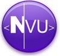

| .:. | svg - revolucija 2D grafike | .:. | N|vu - web dizajn: novi pogled |
| .:. | JavaScript biblioteke | .:. | firefox - vatren i lukav |
| .:. | jQuery biblioteka | .:. | inkscape - svg editor |
N|vu (čita se New View) je relativno nov program namjenjen za izradu i održavanje web stranica. Nastao je na temeljima već poznatog Mozilla Compozera, koji je godinama bio jedini besplatni vizualni HTML editor (WYSIWYG - what you see is what you get). Oba programa su razvijena pod Open Source licencom, što znači da je njihovo korištenje ili prilagođavanje potpuno besplatno. Razvoj sponzorira Linspire (jedna od distribucija Linuxa), a sam program je dostupan na većem broju platformi.
N|vu (čita se New View, eng. novi pogled) je tek počeo svoj razvoj, a već nudi puno za nula kuna. Za sada program mogu koristiti početnici, a da bi bio dobar profesionalcima potrebno mu je još samo nekoliko stvari. Što se tiče početnika u izradi web stranica, za njih je program savršen: jednostavan i intuitivan, a opet vrlo moćan i pun mogućnosti. Trenutno mu se baza korisnika povećava, i ubrzo bi mogao dostići kritičnu masu da postane jedan od standarda na webu kao što je njegov rođak Mozilla Firefox. Firefox je već više od godinu dana najbolji web preglednik, a izgleda da će tako i ostati. Sa Mozillinim aplikacijama ga povezuju odlična modularnost i sučelje.
N|vu je koncipiran na način da sam program bude brz i pouzdan u osnovnim stvarima, a dodatnu funkcionalnost postiže instaliranjem ekstenzija. Takav koncept se polazao odličnim kod Firefox-a iz više razloga. Ekstenzije je relativno lako napraviti, može ih napraviti bilo tko sa malo znanja iz programiranja. Već postoji i ekstenzija za kontrolu hrvatskog pravopisa.
Kad instalirate N|vu (Windows instalacija je velika 6.57 MB) prvo što ćete primjetiti je njegova brzina. Otvara se gotovo trenutno, a sučelje mu je brzo i lijepo dizajnirano. Osim toga, vidi se i da je dobro osmišljeno: toolbari su jasni i logično posloženi, sve važnije opcije imaju svoju ikonicu i vrijeme privikavanja na novo sučelje je vrlo kratko. Osim toga, toolbare je moguće prilagoditi svojim potrebama, a sa instaliranjem ekstenzija dobivat će sve više mogućnosti.
Program nudi uređivanje stranica na više načina (Normal, HTML Tags, Source i Preview), što pruža puno mogućnosti i intuitivnosti. Već je na prvi pogled jasno što ćemo u kojem načinu najlakše obaviti. Pohvalno je što je i u načinu rada Preview moguće uređivati razne stvari (čak i tablice). Preview način rada je zapravo idealan za unošenje i uređivanje teksta i općenito sadržaja kod stranica koje imaju već definirani raspored i dizajn.
U daljnjem tekstu ćemo pogledati kako N|vu funkcionira sa važnijim dijelovima uređivanja web stranica. Da bi lakše stekli dojam o njegovim mogućnostima usporedit ćemo ga sa trenutnim standardom na području vizualnih WYSIWYG editora Macromedia (Adobe) Dreamweaverom. Radi se o profesionalnom programu koji košta oko 1200$, tako da je ova usporedba u neku ruku nepoštena ali N|vu se svakako može nositi s Dreaweaverom u jednostavnijim projektima.
Kada započnemo sa izradom stranice, obično je prvi korak postavljanje tablice koja će služiti za definiranje rasporeda. Umetanje tablice je intuitivno i jednostavno. Moguće je na više načina odabrati broj redaka i stupaca. Editiranje tablica je jednostavno, samo što ergonomija malo pati zbog nedostatka panela koji bi nudio promjenu svojstava odabranih objekata kao što je Properties Panel u Dreamweaveru. Ali, ukupno gledano, uređivanje tablica je jednostavno i efikasno.
Tablicama je moguće doslovno jednim klikom miša dodati ili obrisati odabrani stupac, odnosno redak. Za detaljno uređivanje tablice ili dijelova tablice otvorit će se poseban prozor Table Properties koji sadrži većinu potrebnih svojstava, a zahtjevnijima se nudi i tzv. Advanced Edit. Kontekstni meni je dobro napravljen i desnim klikom miša moguće je odabrati, umetnuti i izbrisati odabrani dio tablice.
Pohvalna je činjenica da za svojstva tablice, redaka i ćelija N|vu uglavnom koristi inline CSS i drži se standarda. Tu i tamo mu se dogodi da u kod ubaci nepotrebne stvari, ali rijetko. Generirani kod se može mjeriti sa profesionalnim Dreamweaverom. Što se tiče generiranog koda za druge elemente (osim tablica), N|vu će dati vrlo čist kod bez suvišnih definicija.
N|vu ima odličnu podršku za CSS, čak i bolju od Dreamweavera. U izborniku Tools možemo odabrati CSS Editor koji nudi sve standardne mogućnosti za CSS reviziju 2. Osim toga editor se odlično snalazi sa stranicama koje kombiniraju inline style sa vrlo kompliciranim eksternim CSS definicijama.
Pravila i definicije koje odaberemo u CSS Editoru možemo odmah vidjeti, jer se sadržaj renderira i trenutno mijenja ovisno o tome što radimo u editoru. Ovo je vrlo korisno, jer nam omogućava brži i lakši odabir potrebnih svojstava. CSS Editor ima i opciju da onemogući neiskusnim korisnicima da korištenjem kompliciranijih definicija ili @import pravila izazovu grešku. Odlično je podržano i dodavanje inline CSS pravila za pojedine elemente stranice.
Što se tiče podrške za formulare, tu je također posao obavljen odlično. Umetanje dijelova formulara je jednostavno i kod generiran u pozadini je vrlo dobar. Tu i tamo se pojavi koji suvišni <br />, ali bez posljedica za izgled dokumenta.
Podrška za popularne layere na prvi pogled ne postoji, ali ako znamo da se zapravo radi o <div> elementima formatiranima CSS-om onda su layeri zapravo podržani. Ali layerima nije moguće manipulirati kao tablicama (povlačiti ih, i mijenjati im veličinu mišem kao kod tablica).
Osim već spomenutog nedostatka panela koji bi omogućavao promjenu svojstava ovisno o kontekstu i odabranom elementu postoji još nekoliko manjih nedostataka. Ali, ove nedostatke nemojte uzeti zdravo za gotovo, jer većinu njih može riješiti instalacija jedne ili dvaju ekstenzija.
Drugi veći nedostatak sučelja je taj što Site Manager trenutno podržava samo FTP protokol, umjesto datoteka na lokalnom disku. Ali zato Site Manager odlično radi posao za koji je namjenjen, a to je za početnike važno. Još jedna dodatna mogućnost N|vu-a je upravo u tome da netko iskusniji napravi cijeli web site, koji će manje iskusan korisnik moći uređivati i održavati pomoću Site Managera, bez potrebe za velikim znanjem iz HTML-a i sličnih tehnologija. Za promjenu teksta na već postojećoj stranici će biti potrebno samo nekoliko klikova mišem i naredba Publish.
Još jedan potencijalni problem za početnike bi moglo biti to što je za sada jedini način da encoding stranice prebacimo na UTF-8 editiranje koda stranice, ili korištenje predloška koji već ima encoding postavljen na UTF-8. Ovo zapravo i nije nedostatak, jer je problem lako moguće riješiti u tzv. Source prozoru promjenom vrijednosti za charset sa ISO-8859-2 na utf-8. Radi se samo o tome da će početnik to morati negdje pročitati da bi znao zašto mu se umjesto dijakritičkih znakova čćžšđ nekad pojavljuju "čudni znakovi".
Osim ovih stvari nedostaje i podrška za umetanje multimedijskih dodataka u stranicu, kao što su Flash, Shockwave, Java Applets, audio i video datoteke. Njih je moguće ubaciti, ali u Source načinu, što će početnicima oduzeti dosta vremena.
Da bi N|vu postao pravi profesionalni program nedostaje mu još samo nekoliko mogućnosti: bolja podrška za predloške (templates) i bolje Source code editor. Već sada postoji kvalitena podrška za predloške, ali nema mogućnosti promjene svih stranica koje su napravljene na osnovu nekog predloška kad ga izmjenimo. Ovo je vrlo korisno kod promjene dizajna stranica, i uklanja potrebu za promjenom iste stvari stranicu po stranicu.
Editiranje samog koda stranice je loše izvedeno. Postoji bojenje koda, ali nije baš najbolje izvedeno. Osim toga, ne postoji ni mogućnost editiranja pomoćnih datoteka kao što su JavaScript, PHP ili ASP skripte.
Razlog ovome su vjerojatno rokovi izrade i izbor osnovne ciljne skupine korisnika. Na službenom forumu je vidljivo da su autori već počeli raditi na većini ovdje nabrojenih nedostataka, tako da možemo očekivati da će slijedeća verzija programa ispraviti većinu stvari.
Sve prednosti N|vu-a je zapravo teško nabrojiti. Najveća je svakako to što je program pod Open Source licencom, što znači da je besplatan za korištenje i slobodan za bilo kakve izmjene i poboljšanja. Osim toga, program je vrlo intuitivan i jednostavan za korištenje, tako da i početnicima omogućuje izradu stranica koje će odlično izgledati. Osim dobrog izgleda stranice će biti i pravilno kodirane i bit će prilagođene važećim standardima.
S obzirom na to da ga razvija poznata Mozilla zajednica, kvaliteta programa i pridržavanje standarda je zagarantirano. Jedna od karakteristika Mozillinih programa je njihova modularnost koja omogućuje da se instaliranjem ekstenzija radikalno povećaju mogućnosti programa, i da ga svaki korisnik prilagodi svojim potrebama. Ekstenzije su zapravo xpi paketi koji obično imaju 20-150 kB, tako da ih je moguće lako i brzo skinuti s interneta i instalirati.
Program je relativno malen i stabilan, a moguće ga je instalirati na više platformi (Windows, Linux, MacOS, BeOS, Unix...). Osim toga, nekima će možda biti zanimljivo da postoji i verzija N|vu-a koju je mouće instalirati na USB disk i koristiti bilo gdje. To je zapravo samo jedan od Open Source programa koji su prilagođeni za instalaciju na USB disk. Osobno koristim PortableFirefox, PortableThunderbird i PortableNvu, a sve ih je moguće downloadati sa www.portableapps.com.